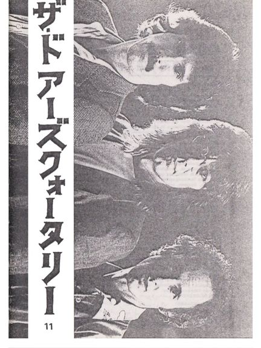

Depending on your computer's safety settings (antivirus, firewall, etc.) the download may generate a standard warning, that is because the magazine is a flipbook in the .EXE file format. We guarantee that the file is absolutely harmless and perfectly safe. |
A new window will open with the magazine for you to read online without the need to download it onto your computer. Again, we guarantee that it's absolutely harmless and perfectly safe. |
|||
|  | The Doors Quarterly Magazine #11
was published on July 25, 1986. The publishing
"devoted itself entirely to The Doors", Danny
Sugerman wrote to fans consulting him for new information on the band. That's why we got quite a few new subscribers in the USA. The cover of this issue was sent in by Osamu Nozawa from Japan, a devoted Doors collector then and now still. Still the talk of town was the Doors film - this June Randy Johnson got chosen as director and a new working title was said to be 'Riders on the Storm'. Fortunately John Travolta wasn't going to star as Jim Morrison, although the script had already been finished. I wonder how good or bad that script was, and how much Oliver Stone used from it later; or how much got deleted. Fine news from Robby. In an interview he said, "We were at Sunset Sounds recording our first LP, when the door opened and The Beatles came in, they were just doing their final American concerts, and they were hanging 'round the studio." That could have been a nice jam session ... Well, whenever musicians meet and there are instruments around they do a jam session, right? One can only imagine ... The Beatles and The Doors ... God only knows what is still in The Doors archives. I still like the collection of interview snippets, which some fan had collected and sent to us. Unfortunately the sources were not added, but pages 12 to 15 still make a good read ... I called it, 'Love it or leave it' ... read what happened on July 3rd 1986 ... for the first time fans got thrown off the cemetery by the police. Check the video of that day, which I shot and uploaded to YouTube many years later. Its title is 'Jim Morrison's grave in Paris, Père Lachaise, July 3, 1986' and the link is featured at the bottom of this introduction. A collection of articles on 'Other Voices' follows, and Patricia Devaux (deceased) appreciated the video 'Dance on Fire' in her tribute in French called 'Dance on Fire: Une Appreciation'. I contributed a review of 'The Definitely Complete Doors Songbook', at the time in 1986 this book was everybody's must-have. DQ 11 closes with a poem by Hlrich Heumann (deceased), a true collector and personal friend for many years. CU and have fun! Thanks to Kevin Chiotis for all of his work! And don't forget: Please note that your digital copy of The Doors Quarterly Magazine 11 hasn't been altered in any way. You get it as it was published in the summer of 1986 (!). Be aware that all addresses (private, phone) are certainly no longer valid. Books, vinyl records and other stuff might not be available anymore. Please do not respond to any of the small ads or blame anyone for incorrect details - all writers just did the best they could do back in early 1986. And all this happened without any computers, no emails and of course without the internet. PS: ... if you would like to obtain an original paper copy of this Doors Quarterly Magazine 11 I must tell you that there are no copies left at all! Thank you! Rainer Moddemann YouTube link: https://www.youtube.com/watch?v=uO_Na3fL4YQ |
|||